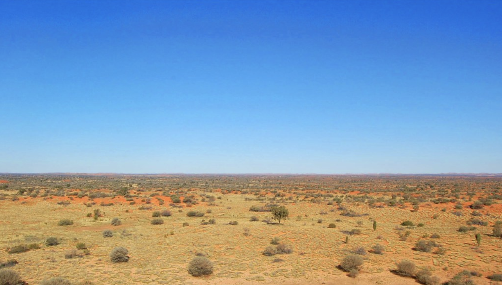

Direct air capture of CO2 below $200 / ton
TAs of 2021, only Climeworks has successfully operated direct air capture (DAC) units and sequestered the captured CO2. However, a new wave of DAC companies (DAC 2.0) has appeared, bringing material and process innovations to bear on this challenge. The cost of directly capturing CO2 from the air has the potential to fall significantly in the next 5 to 10 years due to technical innovations: better materials for carbon capture, more efficient heating and cooling strategies, geometries to reduce pressure drop, optimization of carbonation technologies, and critically, SCALE. The cost and availability of renewable energy - one of the biggest contributors to the cost of DAC - is also dropping.
Market conditions also appear to be finally aligning. The U.S. is tantalizingly close to passing increased incentives for DAC (increasing the 45Q tax credit to $180/tonne CO2 captured thru DAC and sequestered), and California’s LCFS marketplace continues to value sequestered CO2 at over $170/tonne. Several voluntary purchases of DAC credits by large corporations (Stripe, Microsoft) are helping to scale early-stage technologies. We expect such efforts by both companies and the U.S. Department of Energy (DOE) to accelerate.
Noting this alignment in timing and market conditions, combined with a standout team and technology, we recently led a $35 million Series A investment in Carbon Capture, an innovative DAC company.
With these trends, and emerging innovative companies like Carbon Capture and others, we expect one or more DAC companies to reach the $200/tonne CO2 threshold before 2030.
Even without trees, this landscape could one day remove thousands of tonnes of CO2 from the atmosphere "Simpson Desert" by tensaibuta